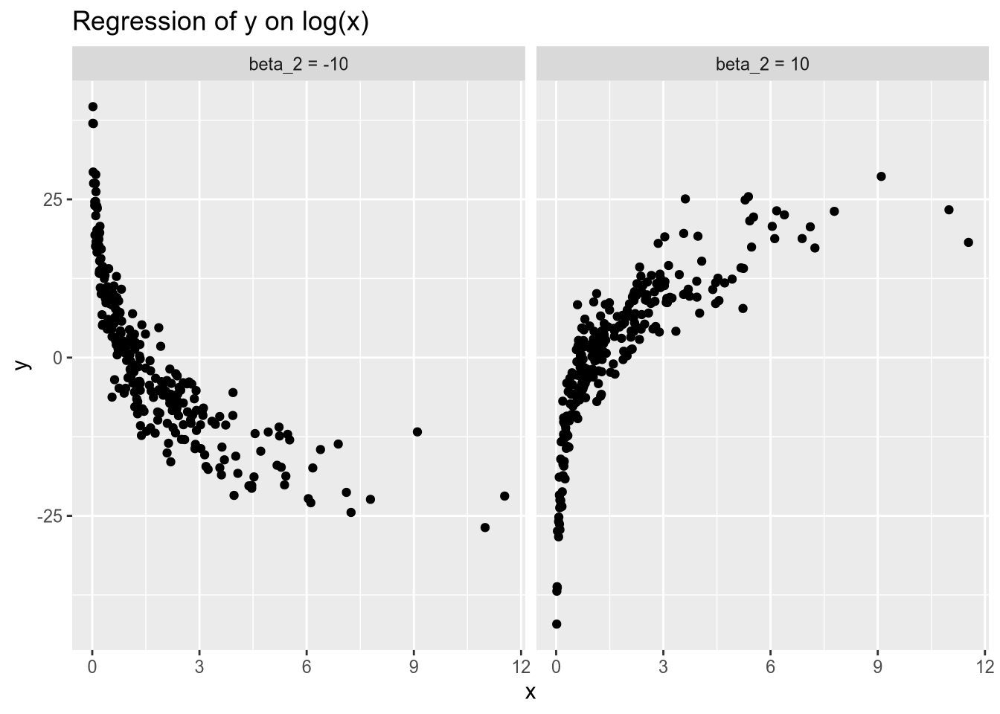
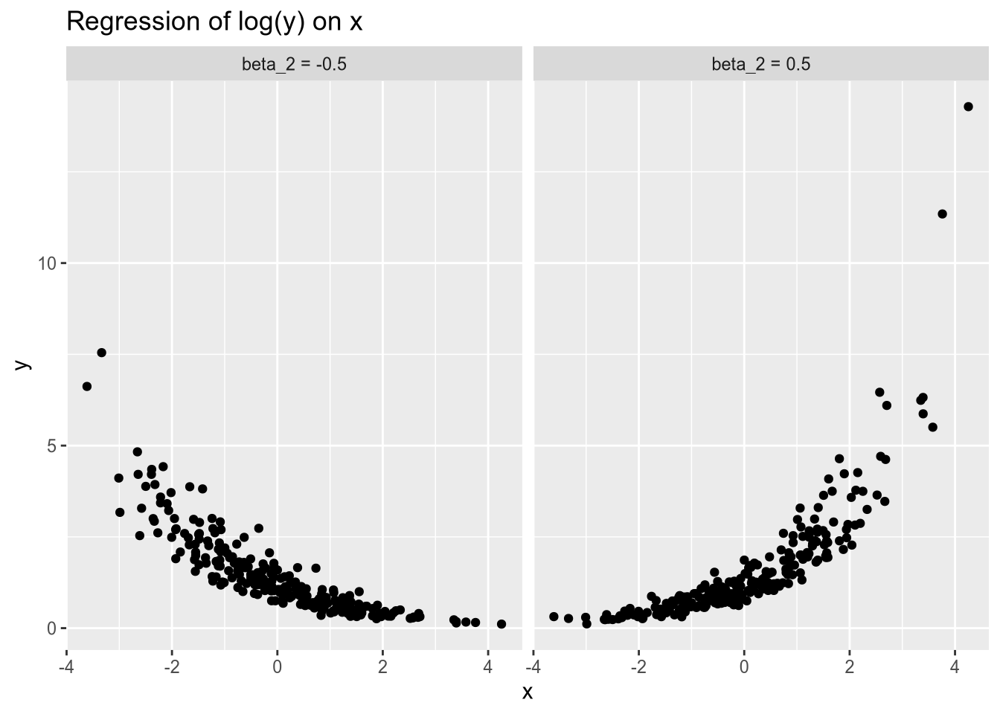
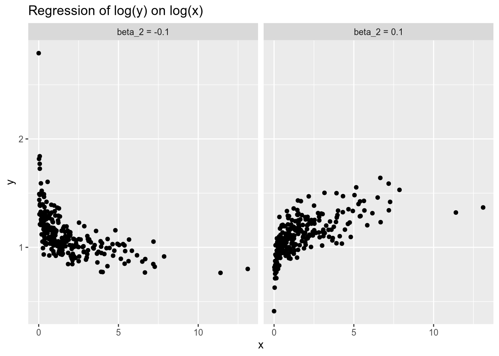
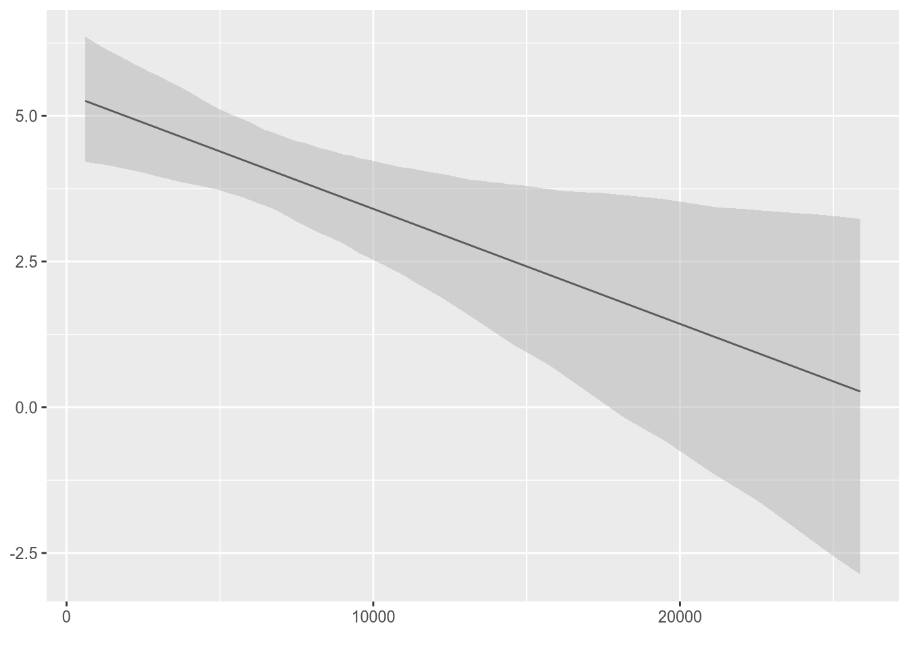
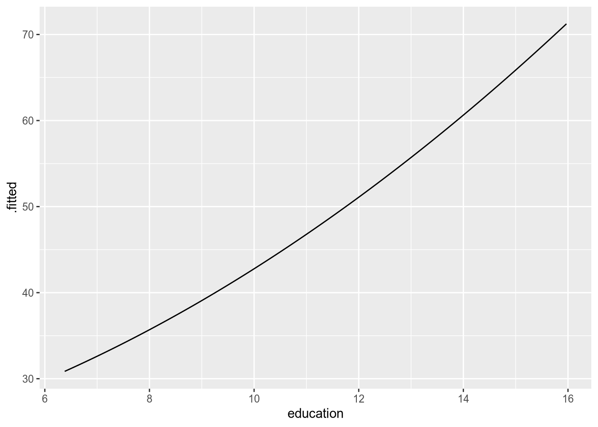

8 Specification Issues
I lied to you about the linear model last week. Like the grade-school teachers who told you everyone thought the world was flat before Columbus proved them wrong, I had good intentions—but it was a lie nonetheless.
I claimed that the linear model assumed that the conditional expectation of the response was a linear function of the covariates. That is false. A data model is a linear model, can be estimated consistently and without bias by OLS, and all that good stuff, as long as it is linear in the parameters.
For example, the following is a linear model. \[ Y_n = \beta_1 + \beta_2 x_n + \beta_3 x_n^2 + \beta_4 x_n^7 + \epsilon_n. \] The conditional expectation of \(Y_n\) is a nonlinear function of \(x_n\) (holding \(\beta\) fixed) but a linear function of \(\beta\) (holding \(x_n\) fixed). Therefore, assuming strict exogeneity holds, OLS is an unbiased, consistent, asymptotically normal estimator of \(\beta\).
The following is not a linear model. \[ Y_n = 2^{\beta_1} + 2^{\beta_2} x_n + \epsilon_n. \] Holding \(\beta\) fixed, this is a linear function of the covariate \(x_n\). But, holding \(x_n\) fixed, this is not a linear function of \(\beta\). OLS is not an appropriate estimator for the parameters of this model.
This week, we will talk about linear models with non-standard covariate specifications—those that aren’t just a linear function of continuous variables.
8.1 Categorical Variables
Using the linear model, we write the conditional expectation for the \(n\)’th response as \[ E[Y_n \,|\, \mathbf{x}_n] = \mathbf{x}_n \cdot \beta + \epsilon_n, \] where \(\mathbf{x}_n\) is the vector of \(K\) covariates (including the intercept) and \(\beta\) is the vector of \(K\) coefficients we wish to estimate.
This makes sense with numerical variables, but not so much with categorical variables. For example, think of the relationship between party identification and one’s vote in the 2016 presidential election. Suppose our response variable is one’s vote (1 for Trump, 0 for non-Trump), and our party ID variable records whether the respondent is a Republican, Democrat, or independent. The resulting linear model equation, \[ \text{Trump}_n = \beta_1 + \beta_2 \text{Party ID}_n + \epsilon_n, \] doesn’t really make sense, because party ID isn’t a number.23
To incorporate a categorical variable into the linear model, we break each category into its own binary variable. For example, with our party ID variable, we go from \[ \text{Party ID} = \begin{pmatrix} \text{R} \\ \text{R} \\ \text{I} \\ \text{I} \\ \text{D} \\ \text{D} \end{pmatrix} \] to \[ \text{Republican} = \begin{pmatrix} 1 \\ 1 \\ 0 \\ 0 \\ 0 \\ 0 \end{pmatrix}, \text{Independent} = \begin{pmatrix} 0 \\ 0 \\ 1 \\ 1 \\ 0 \\ 0 \end{pmatrix}, \text{Democratic} = \begin{pmatrix} 0 \\ 0 \\ 0 \\ 0 \\ 1 \\ 1 \end{pmatrix}. \] These are called dummy variables or, preferably, indicator variables.
Having turned our categorical variable into a set of indicators, you may be tempted to rewrite the model as \[ \text{Trump}_n = \beta_1 + \beta_2 \text{Republican}_n + \beta_3 \text{Independent}_n + \beta_4 \text{Democratic}_n + \epsilon_n. \] But take a look at the matrix of covariates, or design matrix, that would result if we set up the model this way: \[ \mathbf{X} = \begin{bmatrix} 1 & 1 & 0 & 0 \\ 1 & 1 & 0 & 0 \\ 1 & 0 & 1 & 0 \\ 1 & 0 & 1 & 0 \\ 1 & 0 & 0 & 1 \\ 1 & 0 & 0 & 1 \end{bmatrix} \] The columns of the design matrix are linearly dependent: the constant term is equal to the sum of three party ID indicators. (A useful exercise is to calculate \(\mathbf{X}^\top \mathbf{X}\) and confirm that its columns are linearly dependent too.) This means we can’t include all three when estimating \(\beta\) via OLS—we have to drop one category.
In one sense, which category we drop is immaterial—our regression will make the same predictions either way. However, in order to interpret the results of a regression on categorical variables, it is important that we know what the categories are, and which one has been dropped.
For example, imagine we drop the Republican category, so we have the following linear model: \[ \text{Trump}_n = \beta_1 + \beta_2 \text{Independent}_n + \beta_3 \text{Democratic}_n + \epsilon_n. \] For a Republican voter, the Independent and Democratic variables will both equal zero, so we will have \[ E[\text{Trump}_n \,|\, \text{Party ID}_n = \text{R}] = \beta_1. \] In other words, the intercept will be the predicted probability that a Republican votes for Trump. For an Independent voter, we will have \[ E[\text{Trump}_n \,|\, \text{Party ID}_n = \text{I}] = \beta_1 + \beta_2. \] So the coefficient on the Independent indicator is not the predicted probability that an Independent votes for Trump. Instead, it is the difference in probability of a Trump vote between Independents and the baseline category (in this case, Republicans).
If Independents are less likely than Republicans to vote for Trump, the coefficient on Independent will be negative.
If Independents are more likely than Republicans to vote for Trump, the coefficient on Independent will be positive.
If Independents are equally likely as Republicans to vote for Trump, the coefficient on Independent will be zero.
Similarly, for a Democratic voter, we have \[ E[\text{Trump}_n \,|\, \text{Party ID}_n = \text{D}] = \beta_1 + \beta_3. \] The interpretation of the coefficient on Democratic is the same as for the coefficient on Independent.
Take a look at the following results of a hypothetical regression.
| Coefficient | Estimate |
|---|---|
| (Intercept) | 0.9 |
| Independent | -0.4 |
| Democratic | -0.75 |
Republicans have a 90% chance of voting for Trump. We see that by looking at the intercept, since Republicans are the omitted category.
We see from the coefficient on Independent that an Independent’s chance of voting for Trump is 40% lower than a Republican’s. This means that an Independent has a 50% chance of voting for Trump.
Similarly, we see from the coefficient on Democratic that a Democrat’s chance of voting for Trump is 75% lower than a Republican’s, for a 15% chance overall.
Had we instead omitted Independent, we would get different coefficients, but the same predictions.
| Coefficient | Estimate |
|---|---|
| (Intercept) | 0.5 |
| Republican | 0.4 |
| Democratic | -0.35 |
Same story, different numbers, had we omitted Democratic.
| Coefficient | Estimate |
|---|---|
| (Intercept) | 0.15 |
| Republican | 0.75 |
| Independent | 0.35 |
Given that the results are substantively the same no matter what, does it matter which category we choose to drop? Yes, for the purpose of communicating your results. The omitted category should serve as a meaningful baseline. For this example, all of our three categories are substantively meaningful, so any choice will do. But imagine replacing our part ID variable with a race variable that has the following categories:
- White
- Black
- Hispanic
- Asian
- Other
You may be tempted to make “Other” the excluded category, so that you obtain a coefficient for each of the specific racial groups. But that’s actually the worst choice possible. The coefficient on the White variable would then represent the difference in probability of voting for Trump between a white voter and a voter in the “other” category—which is hard to interpret. Whereas if we instead omitted the Black category, the coefficient on the White variable would represent the difference between white and black voters.
When in doubt, I recommend omitting whichever category is largest in the data.
Now let’s introduce covariates into the mix. Consider a regression of Trump vote on party ID (Republican as omitted category) and age, producing the following results.
| Coefficient | Estimate |
|---|---|
| (Intercept) | 0.8 |
| Independent | -0.4 |
| Democratic | -0.75 |
| Age | 0.002 |
Remember what the coefficient of 0.002 on Age means: if we compared one voter to another who was otherwise identical (in this case, same Party ID) except five years older, we would expect the latter voter to have a 1% greater chance of voting for Trump.
More specifically, we have three different regression lines—one for each group: \[ \begin{aligned} E[\text{Trump}_n \,|\, \text{Party ID}_n = \text{R}, \text{Age}_n] &= 0.8 + 0.002 \text{Age}_n, \\ E[\text{Trump}_n \,|\, \text{Party ID}_n = \text{I}, \text{Age}_n] &= 0.4 + 0.002 \text{Age}_n, \\ E[\text{Trump}_n \,|\, \text{Party ID}_n = \text{D}, \text{Age}_n] &= 0.05 + 0.002 \text{Age}_n. \end{aligned} \] Notice that the slope is the same in each regression line. Only the intercept varies across groups. When we include a categorical variable in a regression model, it’s like allowing the intercept to differ across categories.
8.2 Interaction Terms
When political scientists or economists describe their regression results, they will often talk about the marginal effects of different variables. Formally, the marginal effect of the \(k\)’th covariate, \(x_{nk}\), is \[ \frac{\partial{}E[Y_n \,|\, \mathbf{x}_n]}{\partial{}x_{nk}}, \] the partial derivative of the conditional expectation with respect to the \(k\)’th covariate.
The marginal effect answers the following question: Suppose we have two observations that differ in the \(k\)’th covariate by one unit, but are otherwise identical. How much greater, or less, would we expect the response to be for the observation with the one-unit-greater value of \(x_{nk}\)?
If we were sure the relationship we were modeling were causal, we could phrase the above question more succinctly. We could ask: Given a one-unit change in the \(k\)’th covariate, holding all else fixed, what change in the response should we expect? But we haven’t yet gotten to the point where we can make our claims causal. Hence I will often refer to so-called marginal effects, since I don’t want the “effect” terminology to deceive us into thinking we’re drawing causal inferences. So-called marginal effects are just a nice way to summarize the relationship between individual covariates and the conditional expectation.
The bare-bones linear model has the (sometimes appealing, sometimes not) feature that it assumes constant marginal effects. For each covariate \(x_{nk}\), we have \[ \frac{\partial{}E[Y_n \,|\, \mathbf{x}_n]}{\partial{}x_{nk}} = \beta_k, \] the coefficient on that covariate. This encodes two critical assumptions:
The marginal effect of the \(k\)’th covariate does not depend on the value of any other covariates.
The marginal effect of the \(k\)’th covariate does not depend on its own value.
It is easy to think of scenarios where each of these might be questionable.
Imagine a study of individual voters’ choices in U.S. House races, where we model voting for the incumbent as a function of how often the voter goes to church. The marginal effect of religiosity is probably different if the incumbent is a Republican than if the incumbent is a Democrat.
Imagine a study of individual voters’ turnout decisions, where we model turnout as a function of the voter’s ideology. Suppose ideology is measured on a 7-point scale, where 1 is most liberal and 7 is most conservative. We know the most ideologically extreme voters are the most likely to turn out. So, all else equal, we’d expect moving from 1 to 2 (very liberal to pretty liberal) to decrease one’s probability of voting, but we’d expect moving from 6 to 7 (pretty conservative to very conservative) to increase one’s probability of voting.
Let’s start with the first case, where the (so-called) marginal effect of one variable depends on the value of another variable. To allow for this in our models, we include the product of the two covariates in our model.
For example, suppose we are interested in whether the relationship between education and voting for Trump is different between whites and non-whites. We would include three terms in the model (plus an intercept): education, an indicator for white, and their product. \[ \text{Trump}_n = \beta_1 + \beta_2 \text{Education}_n + \beta_3 \text{White}_n + \beta_4 (\text{Education}_n \times \text{White}_n) + \epsilon_n. \] The so-called marginal effect of education is now \[ \frac{\partial{}E[\text{Trump}_n \,|\, \mathbf{x}_n]}{\partial{}\text{Education}_n} = \beta_2 + \beta_4 \text{White}_n. \] This equation tells us three things.
\(\beta_2\) is the marginal effect of education for non-white voters.
\(\beta_4\) is the difference between the marginal effect of education for white voters and the effect for non-white voters.
\(\beta_2 + \beta_4\) is the marginal effect of education for white voters.
Another way to think of it is that we have two regression lines: \[ \begin{aligned} E[\text{Trump}_n \,|\, \text{White}_n = 0, \text{Education}_n] &= \beta_1 + \beta_2 \text{Education}_n, \\ E[\text{Trump}_n \,|\, \text{White}_n = 1, \text{Education}_n] &= (\beta_1 + \beta_3) + (\beta_2 + \beta_4) \text{Education}_n. \end{aligned} \] We saw before that including a categorical variable is like allowing a different intercept for each category. Including an interaction with a categorical variable is like allowing a different slope for each category.
At this point, you might ask, why not just run two separate regressions? I can think of at least two reasons not to.
You might want to include other covariates whose effects you don’t think are dependent on race (e.g., age). If you ran separate regressions, you would estimate race-dependent effects for every covariate, at a potential loss of efficiency.
You might want to formally test the hypothesis that the effect of education is equal for whites and non-whites. This is easiest to do if you have a single model. Next week we will talk about the tools you would need to undertake this sort of test.
One frequent source of confusion with interaction terms is whether you need to include lower-order terms in the model. For example, if we are only interested in how the effect of education differs with race, why can’t we just include education and its product with race in the specification? The equations above give you the answer. Leaving the white indicator out of the model is like fixing \(\beta_3 = 0\). This means you’re forcing the regression lines for whites and non-whites to have the same intercept, which there’s no good reason to do.
If you’re not yet persuaded on the necessity of including constitutive terms of interactions in your regressions, see Braumoeller (2004).
For an example of interaction terms, imagine the following example. Suppose education is measured in years of schooling.
| Coefficient | Estimate |
|---|---|
| (Intercept) | 0.3 |
| Education | 0.01 |
| White | 0.4 |
| Education * White | -0.03 |
We would interpret these in the following way.
A hypothetical non-white voter with zero years of education has a 30% chance of voting for Trump. For each additional year of education, the probability of voting for Trump goes up by 1%.
A hypothetical white voter with zero years of education has a 70% (0.3 + 0.4) chance of voting for Trump. For each additional year of education, the probability of voting for Trump goes down by 2% (0.01 - 0.03).
What about an interaction between two continuous variables? For example, imagine an interaction between age and education in our model of voting for Trump.
| Coefficient | Estimate |
|---|---|
| (Intercept) | 0.4 |
| Education | -0.02 |
| Age | 0.002 |
| Education * Age | 0.0002 |
One simple way to interpret the effect of each variable is to hold the other one fixed at various values. For example, for a 20-year-old, we have \[ \begin{aligned} E[\text{Trump}_n \,|\, \text{Age}_n = 20, \text{Education}_n] &= 0.44 - 0.16 \text{Education}_n, \end{aligned} \] whereas for an 80-year-old, we have \[ \begin{aligned} E[\text{Trump}_n \,|\, \text{Age}_n = 80, \text{Education}_n] &= 0.56 - 0.04 \text{Education}_n. \end{aligned} \] These results would seem to imply that (1) older people have a higher baseline probability of voting for Trump, and (2) the magnitude of the negative relationship between education and voting for Trump is weaker for older voters.
Always remember: when in doubt, take the partial derivative of \(Y_n\) (or, more precisely, its conditional expectation) with respect to the variable you’re interested in. For example, here we have \[ \frac{\partial{}E[\text{Trump}_n \,|\, \mathbf{x}_n]}{\partial{}\text{Education}_n} = -0.02 + 0.0002 \text{Age}_n. \]
8.3 Quadratic Terms
We use interaction terms when the marginal effect of one variable depends on the value of another variable. But sometimes the marginal effect of a variable depends on its own value. The most stark example is a “U-shaped” relationship, such as we expect between ideology and voter turnout.

We call this kind of relationship non-monotonic, since it is neither increasing everywhere nor decreasing everywhere. However, even with a monotonic relationship, the marginal effect might depend on the value of the variable. (In other words, while every linear function is monotonic, not every monotonic function is linear.) For example, think of a hockey-stick shaped relationship.
If we model the relationship between years of education and voting for Trump as linear, then we impose the assumption that the difference between voters with 16 years of education and 12 years of education (college versus high-school graduates) is the same as between those with 24 and 20 years of education (got the PhD slowly versus got the PhD quickly). Depending on our sample and the goal of our study, that may not be a reasonable assumption (or approximation).
We typically use quadratic models for non-monotonic relationships. In the example above, this would entail a regression model like \[ \text{Turnout}_n = \beta_1 + \beta_2 \text{Ideology}_n + \beta_3 \text{Ideology}_n^2 + \epsilon_n. \] Under this model, the marginal effect of Ideology is \[ \frac{\partial{}E[\text{Turnout}_n \,|\, \text{Ideology}_n]}{\partial{}\text{Ideology}_n} = \beta_2 + 2 \beta_3 \text{Ideology}_n. \]
If \(\beta_3\) is positive, that means the effect of Ideology increases with the value of Ideology, representing a U-shaped relationship.
If \(\beta_3\) is negative, that means the effect of Ideology decreases with the value of Ideology, representing an inverse-U-shaped relationship.
If \(\beta_3\) is zero, that means the effect of Ideology is constant.
8.4 Logarithmic Models
The last common form of nonlinear specification is when we take the natural logarithm of a covariate, the response, or both.
To set a baseline, let’s remember the standard bivariate linear model, \[ Y_n = \beta_1 + \beta_2 x_n + \epsilon_n. \] Under the standard model, we say that a 1-unit difference in \(x_n\) is associated with a \(\beta_2\)-unit difference in \(Y_n\). In other words, the so-called marginal effect of \(x_n\) is the constant \(\beta_2\).
Now consider a specification in which we instead model \(Y_n\) as a function of the natural logarithm of \(x_n\): \[ Y_n = \beta_1 + \beta_2 \log x_n + \epsilon_n. \] As always, we can calculate the so-called marginal effect by taking the partial derivative: \[ \frac{\partial{}E[Y_n \,|\, x_n]}{\partial{}x_n} = \frac{\beta_2}{x_n}. \] This tells us that as \(x_n\) grows larger, the magnitude of the so-called marginal effect diminishes, as in the following illustrations.

One way to interpret this kind of specification is that a 1 percent increase in \(x_n\) is associated with a \(\frac{\beta_2}{100}\) unit change in \(Y_n\). To see why, we will rely on two fun facts: that \(\log(a \times b) = \log a + \log b\) and that \(\log(1 + x) \approx x\) for small \(x\) (roughly \(|x| < 0.1\)). Now let \(Y_n\) be the baseline value of the response, and let \(Y_n'\) be the counterfactual value under a 1 percent increase in \(x_n\). Then we have \[ \begin{aligned} Y_n' - Y_n &= \beta_2 (\log(1.01 x_n) - \log x_n) \\ &= \beta_2 (\log 1.01 + \log x_n - \log x_n) \\ &= \beta_2 \log 1.01 \\ &\approx 0.01 \beta_2. \end{aligned} \]
Conversely, you may see a specification in which the response is logged and the covariate is not: \[ \log Y_n = \beta_1 + \beta_2 x_n + \epsilon_n. \] For positive \(\beta_2\), this means the so-called marginal effect of \(x_n\) increases as \(x_n\) grows large. Similarly, for negative \(\beta_2\), this means the so-called marginal effect of \(x_n\) increases as \(x_n\) decreases.

To interpret this specification, we say that a 1 unit increase in \(x_n\) is associated with a \(100(e^{\beta_2} - 1)\) percent change in \(Y_n\). For example, with a coefficient of \(\beta_2 = 0.5\), we would say a 1 unit increase in \(x_n\) is associated with a 65% increase in \(Y_n\), as \(e^{0.5} \approx 1.65\). To see why this is the case, let \(Y_n\) be the baseline value of the response, and let \(Y_n'\) be the counterfactual value under a 1 unit increase in \(x_n\). Then, as observed by Angrist and Pischke (2015, 93–94), we have \[ \log \frac{Y_n'}{Y_n} = \log Y_n' - \log Y_n = \beta_2, \] and therefore \[ Y_n' = \exp(\beta_2) Y_n. \] Conveniently, for small values of \(\beta_2\) (roughly \(|\beta_2| < 0.1\)), we have \(\exp(\beta_2) - 1 \approx \beta_2\). For example, if \(\beta_2 = -0.05\), then we would say that a 1 unit increase in \(x_n\) is associated with a 5% decrease in \(Y_n\).
Last, consider the model in which the covariate and the response are both logged: \[ \log Y_n = \beta_1 + \beta_2 \log X_n + \epsilon_n. \]

In the last two specifications, we interpreted the term that was logged in terms of percentage changes. The same is true here: the log-log model relates percent changes in \(x_n\) to percent changes in \(Y_n\). Specifically, we say that a 1 percent increase in \(x_n\) is associated with a \(\beta_2\) percent change in \(Y_n\). To see why, again let \(Y_n\) be a baseline value, and let \(Y_n'\) be the counterfactual if we increased \(x_n\) by 1 percent. Then we have \[ \begin{aligned} \log \frac{Y_n'}{Y_n} &= \beta_2 (\log(1.01 x_n) - \log x_n) \\ &= (\log 1.01) \beta_2 \\ &\approx 0.01 \beta_2, \end{aligned} \] which in turn gives us \[ Y_n' \approx \exp(0.01 \beta_2) Y_n \approx (1 + 0.01 \beta_2) Y_n. \] For example, in the log-log model, a coefficient of \(\beta_2 = 0.5\) means that a 1 percent increase in \(x_n\) is associated with a 0.5 percent increase in \(Y_n\).
To summarize, here are the four possible logarithmic specifications and their interpretations:
| Response | Covariate | Interpretation |
|---|---|---|
| \(Y_n\) | \(x_n\) | 1 unit increase in \(x_n\) \(\Rightarrow\) \(\beta\) unit change in \(Y_n\) |
| \(Y_n\) | \(\log x_n\) | 1 percent increase in \(x_n\) \(\Rightarrow\) \(\beta / 100\) unit change in \(Y_n\) |
| \(\log Y_n\) | \(x_n\) | 1 unit increase in \(x_n\) \(\Rightarrow\) \(100(e^\beta - 1)\) percent change in \(Y_n\) |
| \(\log Y_n\) | \(\log x_n\) | 1 percent increase in \(x_n\) \(\Rightarrow\) \(\beta\) percent change in \(Y_n\) |
How do you decide which logarithmic model, if any, to use?
You may let theory be your guide—develop expectations, on the basis of your substantive knowledge, about whether the relevant changes in conditional expectation will be in terms of levels or proportions.
Or you may be inductive—make scatterplots of all four possibilities, and choose the specification under which the relationship is closest to linear.
A final note on logarithmic models. The logarithm of a number \(c \leq 0\) does not exist. Therefore, a logarithmic model is only appropriate for a strictly positive response/covariate. For non-negative variables that include zeroes, some people try to “fix” this by doing \(\log(Y_n + 1)\), but in this situation it is generally better to follow the procedure advocated by Burbidge, Magee, and Robb (1988).
8.5 Appendix: Nonstandard Specifications in R
We will use the following packages:
forcats contains convenience functions for factors, which are R’s way of representing categorical variables. interplot is for plotting marginal effects from interactive models.
Once again, we will work with the occupational prestige data from the car package. We will also convert it to a tibble, so that it will more closely resemble the kind of data frame we would get had we read it in with read_csv().
## # A tibble: 102 x 6
## education income women prestige census type
## <dbl> <int> <dbl> <dbl> <int> <fct>
## 1 13.1 12351 11.2 68.8 1113 prof
## 2 12.3 25879 4.02 69.1 1130 prof
## 3 12.8 9271 15.7 63.4 1171 prof
## 4 11.4 8865 9.11 56.8 1175 prof
## 5 14.6 8403 11.7 73.5 2111 prof
## # … with 97 more rows8.5.1 Categorical Variables
You will notice that the type column of the prestige data is listed as a <fctr>, which stands for factor. A factor is R’s representation of a categorical variable. Let’s take a closer look.
## [1] prof prof prof prof prof prof prof prof prof prof prof prof prof prof prof
## [16] prof prof prof prof prof prof prof prof prof prof prof prof bc prof prof
## [31] wc prof wc <NA> wc wc wc wc wc wc wc wc wc wc wc
## [46] wc wc wc wc wc wc wc <NA> bc wc wc wc bc bc bc
## [61] bc bc <NA> bc bc bc <NA> bc bc bc bc bc bc bc bc
## [76] bc bc bc bc bc bc bc bc bc bc bc bc bc bc bc
## [91] bc bc bc bc bc prof bc bc bc bc bc bc
## Levels: bc prof wcThis looks kind of like—but isn’t quite—a character variable. The most noticeable difference is that R tells us its levels: the set of categories available. We can extract these directly with the levels() function.
## [1] "bc" "prof" "wc"This brings us to an important difference between read.csv() (with a dot, the built-in R function) and read_csv() (with an underscore, the tidyverse version). The old way, read.csv(), by default treats any column of character strings as a factor. The tidyverse way, read_csv(), never creates factors by default—you must make them explicitly.
To create a factor variable, you can use the factor() function:
example_vector <- c(4, 1, 3, 3, 1)
factor(example_vector, # vector to convert to factor
levels = 1:4, # possible values of the vector
labels = c("ONE",
"two",
"Three",
"FOUR!")) # label corresponding to each value## [1] FOUR! ONE Three Three ONE
## Levels: ONE two Three FOUR!Returning to the prestige data, let’s run a regression of occupational prestige on occupational category.
##
## Call:
## lm(formula = prestige ~ type, data = Prestige)
##
## Coefficients:
## (Intercept) typeprof typewc
## 35.527 32.321 6.716lm() automatically converts the factor into a set of indicators, and automatically omits one category from the design matrix. In particular, it omits whichever level is listed first (which may not be the first level to appear in the data!). If you want to have a different category omitted, you need to reorder the levels, placing the category you want to omit first. You can do that with fct_relevel() from the forcats package. Let’s make white-collar (wc) the omitted category.
## [1] "wc" "bc" "prof"We can confirm by checking out the model fit statistics that which category we omit makes no difference to the overall fit of the model, or the predicted values.
## # A tibble: 1 x 11
## r.squared adj.r.squared sigma statistic p.value df logLik AIC BIC
## <dbl> <dbl> <dbl> <dbl> <dbl> <int> <dbl> <dbl> <dbl>
## 1 0.698 0.691 9.50 110. 2.12e-25 3 -358. 724. 735.
## # … with 2 more variables: deviance <dbl>, df.residual <int>## # A tibble: 1 x 11
## r.squared adj.r.squared sigma statistic p.value df logLik AIC BIC
## <dbl> <dbl> <dbl> <dbl> <dbl> <int> <dbl> <dbl> <dbl>
## 1 0.698 0.691 9.50 110. 2.12e-25 3 -358. 724. 735.
## # … with 2 more variables: deviance <dbl>, df.residual <int># fitted() extracts the fitted value for each observation
all.equal(fitted(fit_type), fitted(fit_type_relevel))## [1] TRUEOne more thing—it’s rare you should need to do this, but you can use model.matrix() to extract the design matrix for a fitted regression model.
## [1] 98 3## (Intercept) typeprof typewc
## 1 1 1 0
## 2 1 1 0
## 3 1 1 0
## 4 1 1 0
## 5 1 1 0
## 6 1 1 08.5.2 Interaction Terms
The syntax for an interactive model is pretty intuitive. Let’s look at the joint effect of education and income on occupational prestige.
##
## Call:
## lm(formula = prestige ~ education * income, data = Prestige)
##
## Coefficients:
## (Intercept) education income education:income
## -2.207e+01 5.373e+00 3.944e-03 -1.961e-04Notice that lm() automatically included the lower-order terms for us, so we didn’t have to remember which terms to put in. This is particularly useful when you are interacting with a categorical variable that has many categories, or when you are including higher-order interactions.
If you want to plot the (so-called) marginal effect of education as a function of income, you can use the handy function from the interplot package.

We see that the marginal effect of education on prestige is high for low-income occupations, but almost nil for an occupation that earns around $25,000/year. (The bars represent a confidence interval—of course, we haven’t done any inferential statistics yet.)
8.5.3 Quadratic and Logarithmic Models
The syntax for a quadratic model is a bit weird. You would think you could use a formula like y ~ x + x^2, but that won’t work. Instead, you have to write y ~ x + I(x^2), as in the following example.
##
## Call:
## lm(formula = prestige ~ education + I(education^2) + income,
## data = Prestige)
##
## Coefficients:
## (Intercept) education I(education^2) income
## 10.979513 0.774768 0.153730 0.001276The easiest way to visualize the results of a quadratic model is to create a synthetic dataset, where you vary the relevant variable across its range while holding all the other variables fixed at the same value. Then plug the synthetic dataset into the model to get predicted values.
synthetic_data <- data_frame(
education = seq(min(Prestige$education),
max(Prestige$education),
length.out = 100),
income = mean(Prestige$income)
)
synthetic_data <- augment(fit_quad, newdata = synthetic_data)
head(synthetic_data)## # A tibble: 6 x 4
## education income .fitted .se.fit
## <dbl> <dbl> <dbl> <dbl>
## 1 6.38 6798. 30.9 2.28
## 2 6.48 6798. 31.1 2.20
## 3 6.57 6798. 31.4 2.11
## 4 6.67 6798. 31.7 2.03
## 5 6.77 6798. 31.9 1.95
## 6 6.86 6798. 32.2 1.87
In this case, within the range spanned by the sample data, the estimated quadratic relationship is only barely nonlinear.
Finally, to run a logarithmic model, just put log() around the variables you want to log.
##
## Call:
## lm(formula = log(prestige) ~ log(income) + education, data = Prestige)
##
## Coefficients:
## (Intercept) log(income) education
## 0.33730 0.29912 0.07887To visualize the resulting relationship, you can use the same technique as for quadratic models.
References
Angrist, Joshua D., and Jörn-Steffen Pischke. 2015. Mastering ’Metrics: The Path from Cause to Effect. Princeton University Press.
Braumoeller, Bear F. 2004. “Hypothesis Testing and Multiplicative Interaction Terms.” International Organization 58 (04): 807–20.
Burbidge, John B, Lonnie Magee, and A Leslie Robb. 1988. “Alternative Transformations to Handle Extreme Values of the Dependent Variable.” Journal of the American Statistical Association 83 (401): 123–27.
Oldish-school political scientists, by which I mean just about anyone who got their PhD between 1990 and 2010, would now be clutching their pearls at the mere thought of using a linear model for vote choice. But so-called “binary dependent variable” models like logistic regression are at best overrated, as you read in Mostly Harmless Econometrics.↩︎